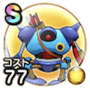

キラーマシン
5章9話〜6章8話こころ最大コスト+4スキルの斬撃・体技ダメージ+12%メラ属性耐性+10%麻痺耐性+10% / 7.5点
くわしい特徴
【ランク特殊効果】 こころ最大コスト+4スキルの斬撃・体技ダメージ+12%ギラ属性斬撃・体技ダメージ+5%マシン系へのダメージ+5%メラ属性耐性+10%麻痺耐性+10%こころ最大コスト+4スキルの斬撃・体技ダメージ+12%メラ属性耐性+10%麻痺耐性+10%

5章9話〜6章8話こころ最大コスト+4スキルの斬撃・体技ダメージ+12%メラ属性耐性+10%麻痺耐性+10% / 7.5点
【ランク特殊効果】 こころ最大コスト+4スキルの斬撃・体技ダメージ+12%ギラ属性斬撃・体技ダメージ+5%マシン系へのダメージ+5%メラ属性耐性+10%麻痺耐性+10%こころ最大コスト+4スキルの斬撃・体技ダメージ+12%メラ属性耐性+10%麻痺耐性+10%